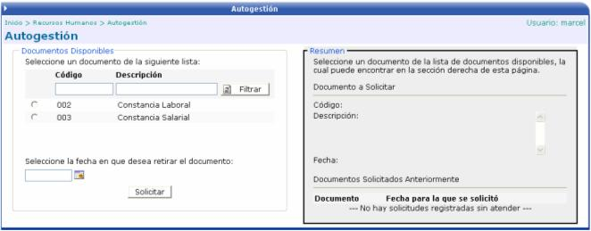

En esta opción se pueden solicitar constancias y/o certificaciones según sean los documentos que se manejen en la empresa. Los documentos que se listan al lado izquierdo de la pantalla, son aquellos que se crean en el módulo de Parámetros de RH en la opción de Certificaciones RH y que tiene activo el valor de: Solicitable por Autogestión.
Se debe de escoger el documento a solicitar y la fecha en que se desea retirar el mismo:

Al presionar el botón de solicitar, se genera un registro de la solicitud en el módulo de Expediente y Nómina en la opción de Generar Certificaciones de RH